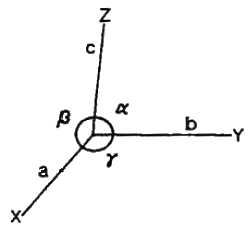
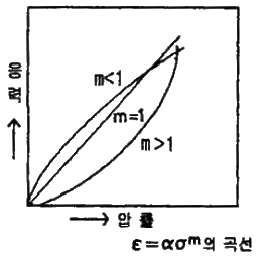
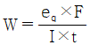
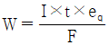
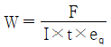
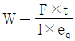
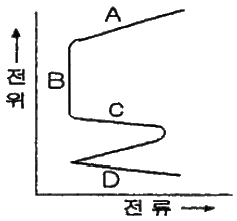
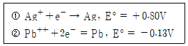

표면처리산업기사 (2006-05-14 기출문제)
1과목: 금속재료 및 재료시험
1. 한번 어느 방향으로 소성변형을 가한 재료에 역방향의 하중을 가하면 전과 같은 방향으로 하중을 가한 경우보다 소성변형에 대한 저항이 감소하게 되는 현상은?
- Bauschinger 효과
- Ageing 효과
- Widamannstatten 효과
- Kirkendall 효과
(정답률: 알수없음)

2. 40mm2의 단면적을 갖는 재료에 500kgf의 최대하중이 작용하였다면, 이 재료의 인장강도는 몇 kgf/mm2 인가?
- 10.0
- 12.5
- 15.0
- 16.5
(정답률: 100%)
3. 18-8 스테인리스강의 설명으로 옳은 것은?
- 크롬 8%, 니켈 18%를 함유한 스테인리스강으로 마텐자이트 조직을 갖는다.
- 텅스텐 18%, 니켈 8%를 함유한 스테인리스강으로 펄라이트 조직을 갖는다.
- 크롬 18%, 니켈 8%를 함유한 스테인리스강으로 오스테나이트 조직을 갖는다.
- 크롬 18%, 망간 8%를 함유한 스테인리스강으로 페라이트 조직을 갖는다.
(정답률: 알수없음)
4. 금속판에 힘을 주어 구부리면 변형되는데 그 힘을 없애도 남게 되는 변형은?
- 소성변형
- 의탄성변형
- 탄성변형
- 크리프변형
(정답률: 알수없음)
5. 영구 자석강에 관한 설명이 틀린 것은?
- 영구 자석강에는 담금질 경화형, 석출 경화형, 미립자형 등이 있다.
- 마텐자이트 변태를 이용한 자석강을 담금질 경화형 영구 자석강이라 한다.
- 과포화 α고용체에서의 석출경화를 이용한 자석강을 석출경화형 영구 자석강이라 한다.
- 미립자형 영구 자석강은 철 금속산화물의 분말을 혼합하여 가압성형 소결한 것으로 저항값이 낮고 무겁다.
(정답률: 알수없음)
6. 실용 형상기억 합금이 아닌 것은?
- Cu – W - S
- Cu – Au - Zn
- Cu – Zn - Si
- Cu – Zn - Al
(정답률: 알수없음)
7. 단위포의 모서리 길이의 단위인 1Å과 같은 것은?
- 10-6cm
- 10-6mm
- 10-4cm
- 10-4mm
(정답률: 알수없음)
8. 베어링에 사용되는 구리합금인 켈멧(kelmet)의 합금조성으로 옳은 것은?
- Fe – Co
- Cu- Pb
- Mg – Al
- Si – Zn
(정답률: 알수없음)
9. 그림에서 각축의 단위 길이를 a, b, c라 하고 그 사이의 각도를 α, β, γ라 했을 때 정방정계는?

- a = b = c, α = β = γ = 90°
- a = b ≠ c, α = β = γ = 90°
- a ≠ b ≠ c, α = β = γ ≠ 90°
- a = b = c, α = β = 90°, γ = 120°
(정답률: 알수없음)
10. 열간 가공(성형)용 공구강으로 금형 재료로 사용되는 강종은?
- SNCM435
- SKH51
- SP59
- STD61
(정답률: 알수없음)
11. 금속조직 내의 상의 양을 측정하는 방법이 아닌 것은?
- 면적의 측정법
- 직선의 측정법
- 원의 측정법
- 점의 측정법
(정답률: 알수없음)
12. 금속재료를 침투액에 침지시킨 후 침지액이 현상되면서 결함을 육안으로 관찰하는 시험 방법은?
- UT
- MT
- RT
- PT
(정답률: 알수없음)
13. 만능시험기(UTM)로 측정할 수 있는 시험은?
- 누설시험
- 피로시험
- 인장시험
- 부식시험
(정답률: 알수없음)
14. 에릭션 시험 방법에 대한 설명 중 틀린 것은?
- 일반적으로 시험은 10~35℃ 사이의 대기온도에서 수행하여야 한다.
- 시험편의 두께는 0.01mm의 정밀도로 측정한다.
- 주름 방지 누르개에는 약 100kN의 하중을 가하여 시험한다.
- 펀치의 이동 깊이는 0.1mm의 정밀도까지 측정한다.
(정답률: 알수없음)
15. 강의 오스테나이트 결정립도 시험방법 중 침탄 입도 시험 방법이 아닌 것은?
- 산화법
- 서냉법
- 담금질법
- 조미니 시험법
(정답률: 알수없음)
16. 방사선 작업자가 자신의 작업 안전을 위하여 계속적으로 선량율을 측정할 수 있는 서베이미터 외에 피복선량을 측정할 수 있는 도구가 아닌 것은?
- 포켓 도시미터
- 필름 뱃지
- 열형광 선량계
- 파이로미터
(정답률: 알수없음)
17. 압축에 대한 응력-압률선도에서 m = 1 일 때는 어느 경우인가? (단, m은 재료에 따른 상수이다.)

- 주철
- 완전탄성체
- 피혁
- 고무
(정답률: 알수없음)
18. 반복응력에 파괴되지 않고 견딜 수 있는 최대한도는?
- 탄성한도
- 비례한도
- 피로한도
- 크리프한도
(정답률: 알수없음)
19. 비커스 경도시험기의 다이아몬드 압입체의 꼭지각은?
- 136°
- 126°
- 106°
- 96°
(정답률: 알수없음)
20. 금속조직시험에서 정량조직검사법인 결정립도 측정법이 아닌 것은?
- 설퍼 프린트법
- 헤인법
- ASTM 결정립 측정법
- 제프리즈법
(정답률: 알수없음)
2과목: 표면처리
21. 내식성을 향상시키기 위하여 고온에서 금속 표면에 대해 금속을 확산·침투시키는 표면처리 방법이 아닌 것은?
- 세라다이징
- 메탈라이징
- 칼로라이징
- 크로마이징
(정답률: 알수없음)
22. 전처리가 되지 않았을 때 오는 결함이 아닌 것은?
- 부풀음
- 광택 불균일
- 탄도금
- 조악한 전착
(정답률: 알수없음)
23. 바렐(barrel)연마의 설명 중 틀린 것은?
- 복잡하고 대형인 물품처리에 적합하다.
- 작업방법은 연마작업과 광택작업 두 종류가 있다.
- 수용액의 유무에 따라 습식가 건식으로 분류하다.
- 연마된 물품은 그 완성도가 균일하다.
(정답률: 90%)
24. 크롬산 용액으로 크롬도금을 할 때 음극에서 일어나는 반응으로 틀린 것은?
- 수소가스의 발생
- 6가크롬을부터 3가크롬의 환원
- 금속 크롬의 전착
- 양극금속의 산화
(정답률: 84%)
25. 무전해 도금의 필요한 성분 중 금속이온에 전자를 주어 금속으로 도금되는 작용을 하는 것은?
- 환원제
- 착화제
- 완충제
- 안정제
(정답률: 알수없음)
26. 도금하려는 금속의 석출 전압보다 낮은 전압으로 석출해 불순 금속만을 제거하는 방법은?
- 여과
- 약전해
- 전해탈지
- 전해연마
(정답률: 알수없음)
27. 페놀프탈레인 지시약의 변색범위에 색 변화로 옳은 것은?
- 변색범위 : pH 1.2 – 2.3, 색변화 : 빨강 – 노랑
- 변색범위 : pH 8.3 - 10, 색변화 : 무색 – 분홍
- 변색범위 : pH 4.2 – 6.3, 색변화 : 빨강 – 노랑
- 변색범위 : pH 3.1 – 4.4, 색변화 : 빨강 – 오렌지
(정답률: 알수없음)
28. 수소 취성과 관련된 내용 중 틀린 것은?
- 수소 취성은 도금과정 중 전처리 도금공정에서 수소가스가 흡장되어 취성이 발생한다.
- 수소가스 제거법은 ASTM 규격에서는 150~260℃에서 1 ~ 5시간 가열한다.
- 전해산세, 전해탈지시에는 물품을 음극으로 하여 수소취성을 방지한다.
- 산처리시는 짧게 하는 것이 좋다.
(정답률: 알수없음)
29. 15cm×20cm 크기의 판을 양면 도금하는데 30A의 전류 흐른다면, 이 때의 전류 밀도는 몇 A/dm2인가?
- 2
- 3
- 4
- 5
(정답률: 알수없음)
30. 광택니켈도금 제품에 구름이 끼었을 때의 원인으로 볼 수 없는 것은?
- 전처리가 불량하다.
- 온도가 높거나 낮다.
- 재료금속의 강도가 낮다.
- 교반이 불충분하다.
(정답률: 알수없음)
31. 도금 피막의 경도 시험기로서 적합하지 않은 것은?
- 브리넬 경도계
- 쇼어 경도계
- 누프 경도계
- 마이크로 비커스 경도계
(정답률: 알수없음)
32. 철강 표면에 산화제2철(Fe2O3) 및 사상산화철(Fe3O4)의 피막을 만드는 방법을 무엇이라고 하는가?
- 템퍼 칼라
- 알칼리 착색법
- 보론나이징
- 파카라이징
(정답률: 알수없음)
33. 화학구리도금에서 금속환원제의 역할을 하는 프로말린과 관계가 깊은 반응은?
- 축합반응
- 중화반응
- 카니자로반응
- 에스테르화반응
(정답률: 알수없음)
34. 용융아연도금에서 생성되는 드로스(Dross)는 무엇을 말하는가?
- 철과 아연과의 반응에 의해 생긴 물질
- 아연과 납과의 반응에 의해 생긴 물질
- 철과 주석과의 반응에 의해 생긴 물질
- 철과 납과의 반응에 의해 생긴 물질
(정답률: 알수없음)
35. 일정시간 간격으로 음극 탈지와 양극 탈지를 교대로 시행하는 탈지를 무엇이라 하는가?
- PR 전해 탈지
- 초음파 탈지
- 에멜션 탈지
- 알칼리 탈지
(정답률: 알수없음)
36. 화성처리가 양극산화법에 비하여 우수한 점이라고 볼 수 없는 것은?
- 내식성 및 내마멸성
- 피막의 생성속도
- 도료의 부착성
- 저렴한 설비비
(정답률: 80%)
37. ABS 소자상의 도금을 하기 위하여 감수성 처리를 한다. 감수성 처리를 위해 어떤 약품이 적합한가?
- FeCl2
- SnCl2
- K2Cr2O7
- BaCl2
(정답률: 알수없음)
38. 양극산화 제품을 착색처리할 때의 조건으로 틀린 것은?
- 싱색(짙은색) 피막의 두께가 두꺼워야 함
- 피막자체의 색깔이 적합해야 함
- 피막표면에 자국이나 피트, 흠이 없어야 함
- 피막에 가공이 많고 흡착력이 작아야 함
(정답률: 92%)
39. 도금 피막의 용도 중 내마모성과 경도를 향상시키기 위한 도금이며 양극이 불용성인 것을 사용하는 도금은?
- 구리 도금
- 아연 도금
- 크롬 도금
- 금 도금
(정답률: 알수없음)
40. 다음 중 전해질이 아닌 것은?
- C2H5OH
- NaCl
- H2SO4
- NaOH
(정답률: 알수없음)
3과목: 부식방식
41. 밀폐된 공간 내에서 수송 또는 저장 중에 있는 재료의 부식을 방지하기 위하여 사용되는 억제제는?
- 인산염과 규산염을 혼합한 혼합억제제
- 전기화학적으로 침전하여 발생되는 음극억제제
- 비산화제의 흡착억제제
- 휘발성의 기상억제제
(정답률: 알수없음)
42. 알루미늄 또는 알루미늄 합금강을 열처리 할 경우 열처리를 단독으로 또는 두 가지 이상을 실시 하기 때문에 재질별 기호를 표시한다. 다음 재질별 열처리 표시 기호 중 틀린 것은?
- T3 : 퀜칭 후 가공경화한 재질
- T4 : 퀜칭 후 인공시효하여 냉간가공한 재질
- T5 : 주조 후 퀜칭하지 않고 바로 인공시효한 재질
- T6 : 퀜칭 후 인공시효로 경화 시킨 재질
(정답률: 알수없음)
43. 틈(crecive) 부식이 발생하는 가장 큰 원인은?
- 수소이온 농도 차이
- 산소 농도 차이
- 이온화 경향 차이
- 부동태 산화피막
(정답률: 알수없음)
44. 부식 피로(corrosion fatigue)의 방지법으로 틀린 것은?
- 합금에 의한 인장강도 증가
- 쇼트피닝(shot-peening)
- 응력제거 풀림 열처리
- Zn, Cd, Cr 등의 전기도금
(정답률: 알수없음)
45. Cr 보다 빠르고 안정한 탄화물을 만드는 금속원소를 강에 첨가하므로 Cr23C6의 석출을 억제하여 입계부식을 방지할 때 첨가하는 금속은?
- Ti, Nb
- Cd, Zn
- Co, Pt
- Ca, Na
(정답률: 알수없음)
46. 금속의 부식 방지법으로 틀린 것은?
- 부식억제제를 사용하는 방법
- 습기가 많은 곳에 보관하는 방법
- 금속을 적당한 다른 금속과 합금시키는 방법
- 내식성 피막을 피복시키는 방법
(정답률: 알수없음)
47. 대기부식 방지를 위해 일반적으로 도장 작업으로 보호하는 재질은?
- 철 및 철합금
- 스테인리스강
- 플라스틱
- 티타늄
(정답률: 알수없음)
48. 페러데이 법칙을 나타는 식으로 옳은 것은? (단, W : 전극상에 석출 또는 용해하는 물질의 질량, I = 전류의 세기, t : 전류가 흐른시간, eq : 석출 또는 용해한 물질의 양, F : 페러데이 상수)




(정답률: 알수없음)
49. 방식(防蝕) 아연도금 중에서 광택이 양호하고, 수소 취성이 적으며, 도금 속도가 빨라 못, 볼트, 너트 등에 이용되는 도금 방법은?
- 산성아연 도금
- 시안화아연 도금
- 징케이트 도금
- 중성아연 도금
(정답률: 알수없음)
50. 황동의 응력부식균열에 대한 감수성을 감소 또는 제거하는 방법으로 틀린 것은?
- 응력제거 열처리를 실시한다.
- NH3가 존재할 때 NH3의 접촉을 피한다.
- 양극방식을 실시한다.
- 부식억제제로서 H2S를 사용한다.
(정답률: 알수없음)
51. 외부에서 양극 전류를 흐르게 하여 금속의 표면에 부동태의 보호 피막을 형성시켜 방식하는 방법은?
- 펄스방식
- PR방식
- 음극방식
- 양극방식
(정답률: 알수없음)
52. 1.5μA/cm2의 속도로 부식되는 철(Fe)의 부식침투속도(mpy)를 계산하면 그 값은 약 얼마인가? (단, K : 0.129, a : 55.8, Z = 2, D = 7.86 이다.)
- 0.59(mpy)
- 0.69(mpy)
- 0.79(mpy)
- 0.89(mpy)
(정답률: 알수없음)
53. 탈아연 부식을 방지하기 위한 네이벌 브라스(naval brass)의 성분 원소로 옳은 것은?
- Ch – Zn - Al
- Cu - S
- Cu - Zn
- Cu – Zn - Sn
(정답률: 알수없음)
54. 부식의 전기화학적 과정에서 요구되는 사항으로 틀린 것은?
- 양극과 음극이 전기적으로 접촉하여야 한다.
- 액체가 전해액으로 작용해야 한다.
- 부식현상은 전기전도도가 우수한 금속에서 주로 발생한다.
- 양극과 음극이 존재하여 전지(cell)를 형성해야 한다.
(정답률: 80%)
55. 응력부식균열(SCC)을 줄일 수 있는 방법이 아닌 것은?
- 오스테나이트계 스테인리스강은 Cl-,OH- 등을 제거한다.
- 외부 전력공급에 의해서 또는 희생양극을 사용함으로 음극 방식처리를 한다.
- 퀜칭 열처리를 행한다.
- 응력제거 어닐링처리를 한다.
(정답률: 알수없음)
56. 황산용액 중 철의 전형적인 분극곡선에서 부동태 영역을 나타내는 것은?

- A
- B
- C
- D
(정답률: 알수없음)
57. 미주전류에 의한 부식 중 부식속도가 가장 큰 경우는?
- 주파수가 낮은 직류에 의한 부식
- 주파수가 낮은 교류에 의한 부식
- 주파수가 높은 교류에 의한 부식
- 주파수가 높은 직류에 의한 부식
(정답률: 알수없음)
58. 구조물 설계시 부식을 방지할 수 있는 설계방법으로 틀린 것은?
- 갈바닉 부식을 고려하여 설계한다.
- 배수 및 침전물 제거가 쉽도로 설계한다.
- 형상을 복잡하게 설계한다.
- 기계적 응력을 낮추도록 설계한다.
(정답률: 알수없음)
59. 지하 땅속에 묻힌 강관 및 케이블의 부식을 일으키는 주된 요인은?
- 온도의 구배
- 산소농담전지
- 수소이온저지
- 염분의 구배
(정답률: 알수없음)
60. 다음은 표준 수소 전극과 짝지어 얻은 반쪽반응 표준환원전위 값으로 이들 반쪽 전지를 짝지었을 때 얻어지는 전지의 표준 전위차(기전력)는 얼마인가?

- 0.104
- 0.67
- 0.93
- 2.6
(정답률: 알수없음)